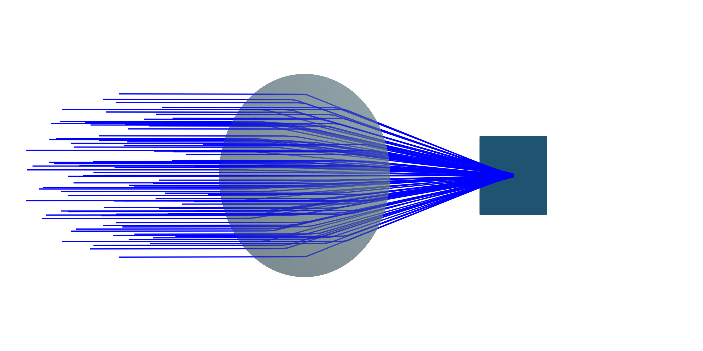
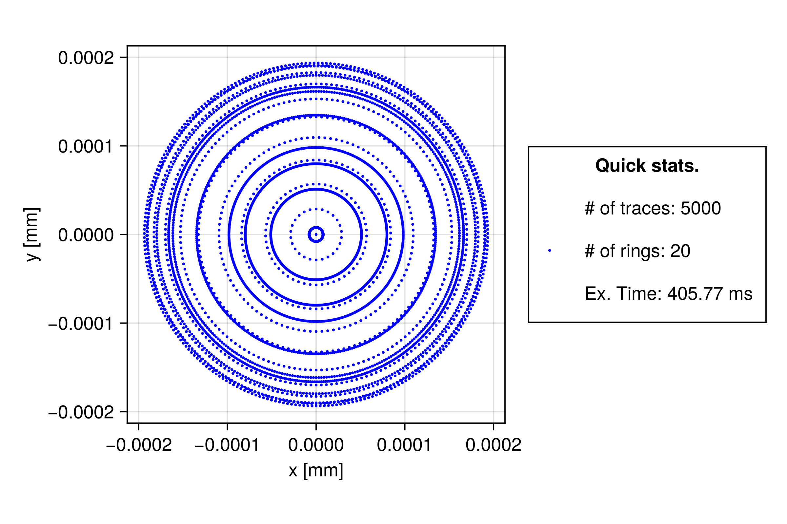
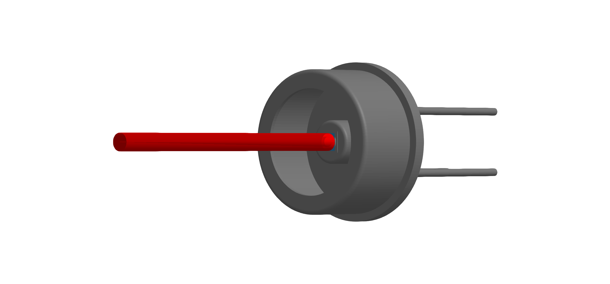
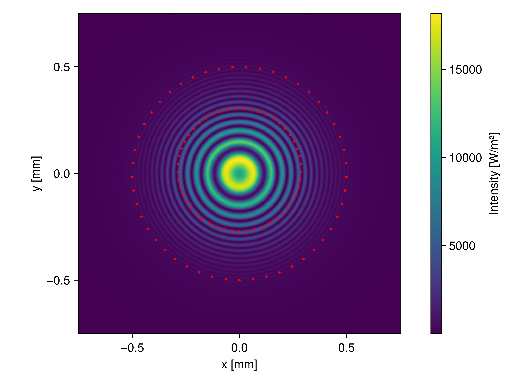
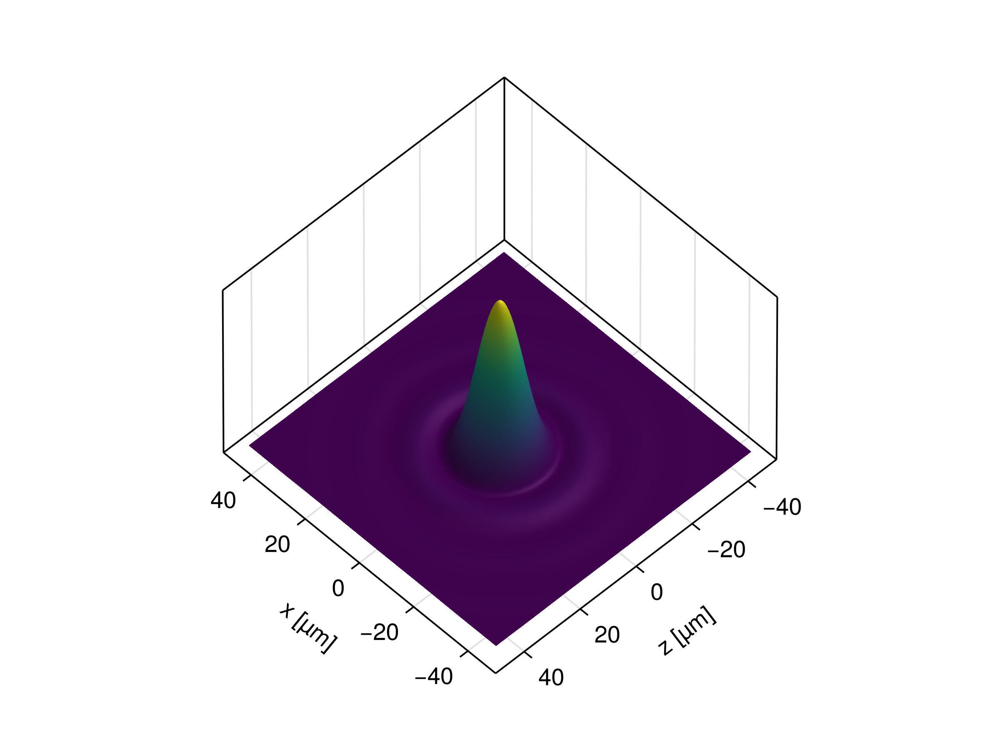
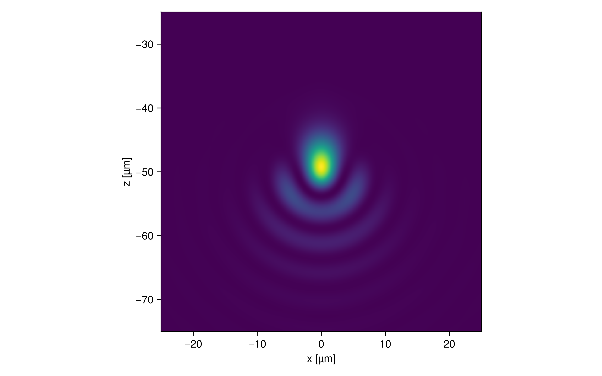

Detectors
In practice, photodetectors allow the conversion of electromagnetic radiation into electric signals. BMO provides the Detector as an element to capture and evaluate optical data during and after running a simulation, respectively. The Detector is designed to accumulate e.g. field or ray data, enabling analysis of intensity distributions, interference patterns, and other beam properties. Currently, post-processing capabilities are limited to the functionality as described in the Spot diagrams and Field distributions sections.
In general, detector-like elements are supposed to fall under the BeamletOptics.AbstractDetector type, which defines a interface for detector implementations.
In general, the data stored in a Detector is not automatically reset between calls of solve_system!. This task is placed within the responsibility of the user. A detector reset can be performed with the empty! function.
Detector type
A Detector can be easily spawned by initializing e.g. pd = Detector(5mm) which will create a 5x5 mm² detection screen.
BeamletOptics.Detector — Method
Detector(edge_length, stop)Spawns a quadratic Detector surface that is aligned with the neg. y-axis. The detector edge length can be configured via edge_length. Additionally, continued tracing can be configured via the stop flag where
trueindicates continued tracingfalsestops the incoming beams as with any hard target
BeamletOptics.Detector — Type
Detector <: AbstractDetectorRepresents a flat rectangular or quadratic, infinitesimally thin surface in R³. The detector surface is a detection screen that captures incoming ray or beamlet data. The active surface is discretized in the local R² x-y-coordinate system. If configured, beams or beamlets can continue tracing after hitting the detector.
Hits
Hits are represented via the AbstractDetectorHit interface. An empty detector is able to detect any kind of incoming hit, but as soon as the initial hit type has been determined, all following hits must share the same type, i.e. no cross-interaction between hit types is allowed.
Functions
The following functions allow a posteriori evaluation of hit contributions via e.g. f(detector). Refer to the respective function documentation.
Additional information
In general, the detection surface is represented by a flat Mesh that has been rotated such that the surface normals point towards the negative y-axis for the initial positioning. This allows for the definition of a left-handed (x, z) surface coordinate system, where incoming beams intersect against the detector surface normal.
The Detector must be reset between each call of solve_system! in order to overwrite previous results using the empty! function. Otherwise, the current result will be added onto the previous result.
Do not move the detector before calculating all parameters of interest for the current system configuration. Since the detector stores pointers to the current system and beam states, silent errors might occur.
Fields
shape: geometry of the active surface, must represent 2D-fieldinxanyydimensions, normal vector direction must adhere to definition abovehits: a union ofNothingand all implementedAbstractDetectorHits, resettable viaempty!(note that only one type is allowed at any time)stop: a boolean value that allows for continued tracing after "passing through" the detectorlock: locks theDetectorfor multithreading-safepush!ing to the hits vector
After solving a system containing a Detector, the methods listed below can be used in order to analyze the stored data. If no data is obtained during the tracing procedure, an error message will be stored.
Spot diagrams
The spot_diagram method provides a straight forward way to generate spot diagrams, which are commonly used to perform initial assessments of the optical performance of an imaging setup.
BeamletOptics.spot_diagram — Function
spot_diagram(d::Detector)Returns an array of 2D points in local detector coordinates that represent the points of intersection for incoming beams.
Beams
For Beams, the point of intersection on the screen surface is stored.
Beamlets
For GaussianBeamlets, the projected 1/e² waist is returned. The number of points and radius can be adjusted via the num_spots and crop_factor keyword arguments.
Below an optical system consisting of a collection of collimated Beams passing through a ThinLens is shown. A Detector is positioned at the approximate focal plane to capture the resulting spot diagram.

The beam bundle used to generate the spot diagram was created via the CollimatedSource constructor. The resulting spot diagram of the lens shown above is visualized below.

Field distributions
Alternatively, the detector data can also be used to reconstruct electric field distributions of incoming beams on its surface using coherent addition. Depending on the beam type, either plane wave or Gaussian beam models are used. As a user, this data can be accessed using the electric_field interface.
BeamletOptics.electric_field — Method
electric_field(pd::Detector; kwargs...)Compute a two‐dimensional electric field based on incoming rays or beams as captured by a Detector. The returned E-field map is sampled on a regular n×n grid in the detector’s local (x,z)-plane. Note that the pd local coordinates are given in a (x, z) basis where the normal vector forms a left-handed system.
Be sure to call empty!(pd) before each new measurement if reusing the same detector.
Keyword Arguments
The following generic kwargs can be used for all hit types:
n::Int=100Number of sample points per axis.crop_factor::Real=1Scales the width of the sampling window returned bycalc_local_lims; values >1 expand, <1 shrink.x_min, x_max, z_min, z_maxManually override the sampling bounds in the local x or z directions. If left asInf, the bounds fromcalc_local_limsare used.x0_shift::Real=0, z0_shift::Real=0Applies a constant offset to the entire x or z coordinate arrays, useful for recentring or testing alignment.
Ray specific keyword arguments
center::AbstractCenterAlgorithm=Centroid()How the sampling window is centred.Centroid()uses the projection‑weighted centroid,MinMax()uses the geometric mid‑point of the bounding box.
The returned values for ray hits correspond to the E-field of the point spread function. The values are raw/unscaled and not equal to a Strehl ratio. This feature is not yet added. In future versions a pupil finder along with a Strehl estimator will be added.
Beamlet specific keyword arguments
num_spots::Int=50Number of hit spots used to determine bounding box
Returns
A tuple (xs, zs, E) where
xs::LinRange{T}andzs::LinRange{T}are the sampled coordinates in the detector’s local x and z axes,E::Matrix{Complex{T}}is the corresponding raw/unscaled intensity map
For convienience, the intensity function returns flux values directly. The optical_power method can be used in order to obtain the total optical power on the detector surface.
BeamletOptics.intensity — Method
intensity(pd::Detector, Z::Number = Z_vacuum; kwargs...)Calculates the intensity distribution on the Detector via
\[I = \frac{|E|^2}{2 \cdot Z}\]
where E is the electric field value and Z is the wave impedance. In general, vacuum wave impedance is assumed. This function returns a tuple (x, y, I). For more information on the available keyword arguments, refer to the electric_field documentation.
Gaussian beamlet interference
One of the use cases of the Detector is to analyse interference patterns. Below a rendered example of a detector model (FDS010) can be seen. The detector active area is marked in blue (1x1 mm²).

The figure below demonstrates an example intensity distribution captured by the detector pictured above, showing radial fringes due to a mismatch of the radii of curvature of the interfering GaussianBeamlets. In addition, the beam waists have been visualized.
Refer to the Michelson interferometer section for a detailed tutorial on how to use the Detector.

Point spread function calculation
The point spread function estimation is a highly experimental feature. It does not use pupils (yet) but merely uses superposition of the ray-attached plane-waves. While this gives qualitatively sound results, it requires good sampling of the problem to obtain quantitatively good results. Currently no Strehl-ratio is calculated due to that.
The package offers a simple method to estimate the point spread function of a system. It is currently limited and requires careful assessment by the user, if the results are to be trusted.
To analyze the PSF of a imaging system a Detector is added to the system at the plane and orientation where the PSF is requested. This is the same approach as for the other detector types. The intensity map together with the coordinate system of the detector can be retrieved after solving the system by calling the intensity function.
When dealing with a collimated source as the input to your optical system, where you want to calculate the PSF, DO NOT use the CollimatedSource beam group directly but instead use the UniformDiscSource constructor. This function returns a CollimatedSource with an equal-area sampling, which correctly weights the outer beams in relation to the inner beams. Otherwise the results might be wrong.
Airy-Disc Example
This is a classic example where a collimated circular beam is imaged onto a point by a singlet lens. Due to the finite size of the aperture stop (in this case given by the 15 mm size of the beam), the diffraction limited intensity pattern is given by the Airy-disc:
\[I(r)=I_0\!\left[\frac{2J_1\!\bigl(\pi D r/(\lambda f)\bigr)}{\pi D r/(\lambda f)}\right]^2\]
With $r$ the radius from the origin, $I_0$ the maximum intensity, $J_1$ the Bessel function of the first kind of order one, $D$ the aperture width, $\lambda$ the wavelength and the focal length $f$.
# example parameters
l = 1e-3
R1 = 100e-3
R2 = Inf
d = 25.4e-3
n = 1.5
λ = 1e-6
# generate uniform source, lens and detector
cs = UniformDiscSource([0, -10mm, 0], [0, 1, 0], 15e-3, λ)
lens = SphericalLens(R1, R2, l, d, x -> n)
detector = Detector(10e-3)
# shift detector into focus
translate3d!(detector, [0, 200mm + 0.13mm, 0])
# build system
sys = System([lens, detector])
solve_system!(sys, cs)
# retrieve intensity
x, z, I_num = intensity(detector; n=500, crop_factor=10)Visualizing the result yields the expected Airy-disk pattern.

Coma and Astigmatism Example
In this example, an aspheric lens images the collimated source onto a point but is tilted around the x-axis by 0.5 degrees. This results in aberrations distorting the stigmatic imaging and leading to coma and astigmatism.
k = -0.675
d = 75.0e-3
l = 15e-3
radius = 76.68e-3
A = [0*(1e3)^1, 2.7709219e-8*(1e3)^3, 6.418186e-13*(1e3)^5, -1.5724014e-17*(1e3)^7, -2.7768768e-21*(1e3)^9, -2.590162e-25*(1e3)^11]
AL75150 = Lens(
EvenAsphericalSurface(radius, d, k, A),
l,
n -> 1.5006520430
)
xrotate3d!(AL75150, deg2rad(-0.5))
detector = Detector(15e-3)
translate3d!(detector, [0, 158.1779e-3, 0.0])
system = System([AL75150, detector])
ps = UniformDiscSource([0, -0.1, 0], [0,1,0], 0.8*d, 1550e-9)
solve_system!(system, ps)